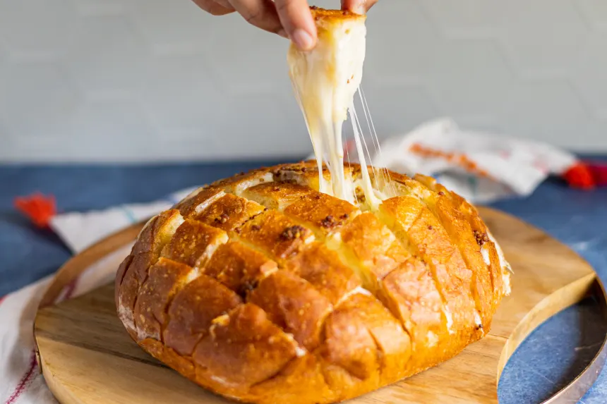

"I found this in Simple and Delicious and it truly fits the title! A
huge hit at a get together and so simple to prepare. I hope you enjoy
it too!"

PHOTO BY LIMEANDSPOONIT
DIRECTIONS
In a small bowl, combine the butter, lemon juice, mustard, garlic
powder and onion powder then set aside.
Cut bread diagonally into 1-inch slices to within a 1/2-inch of
the bottom of the loaf (DO NOT cut all the way through). Repeat
cuts in opposite direction.
Arrange cheese slices in the cuts then drizzle butter mixture over
the bread.
Wrap loaf in foil and place on a baking sheet.
Bake at 350F for 15 minutes then uncover and bake 10 minutes
longer or until cheese is melted. Serve warm.